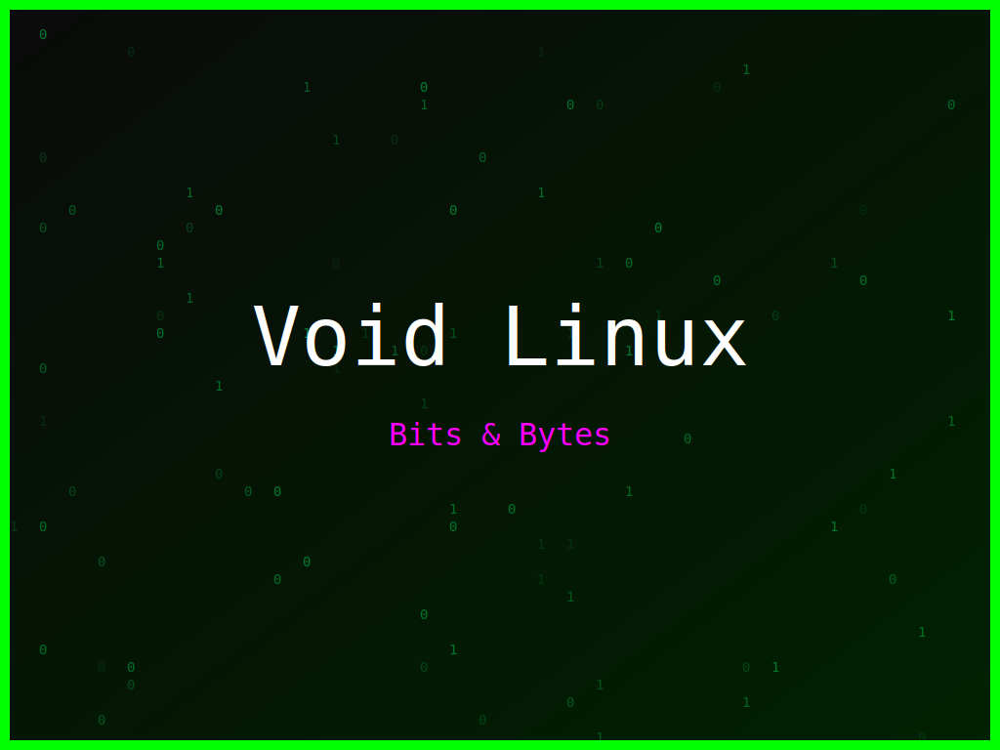

<section class="post-content">


    <div class="details-container">
        
        
        <ul class="details-list">
            <li><strong>Autor:</strong> piolinux</li>
            <li><strong>Descrição:</strong> Design vibrante para Void Linux, celebrando a arte da compilação de código.</li>
            <li><strong>Distro:</strong> Void Linux</li>
            <li><strong>Frases:</strong> Command line master, Bits &amp; Bytes, Compilar é poder</li>
            <li><strong>Tags:</strong> matrix, colorido</li>
        </ul>
        <a href="../galeria.html">Voltar para a galeria</a>||
        <a href="../wallpaper15.svg" download="wallpaper-void-linux-compilar-e-poder.svg">Baixar Wallpaper</a>
    </div>


</section>
